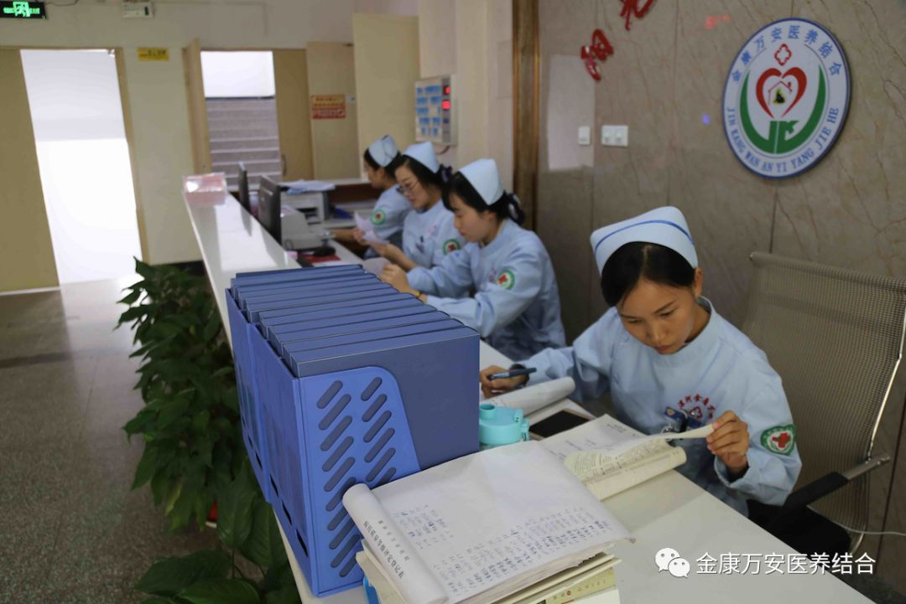
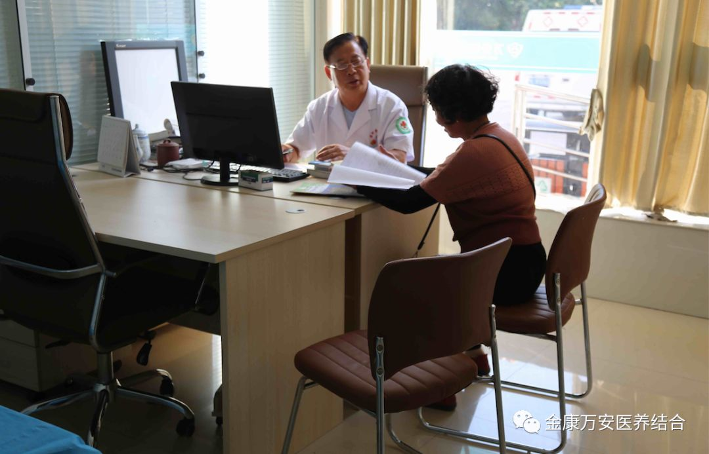
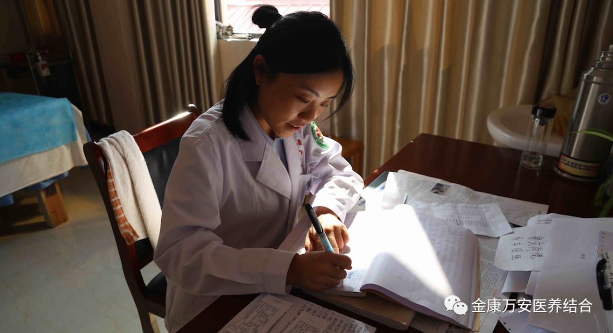
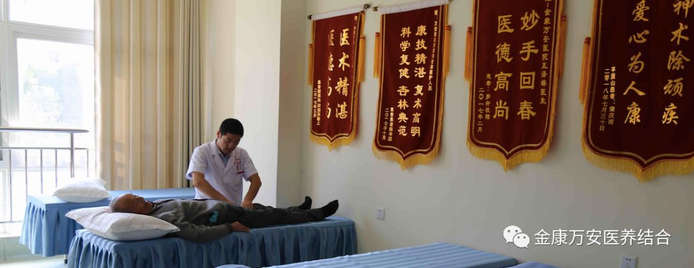
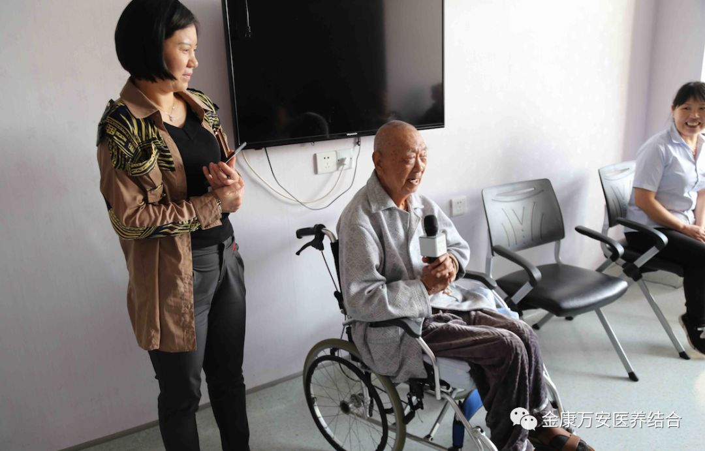
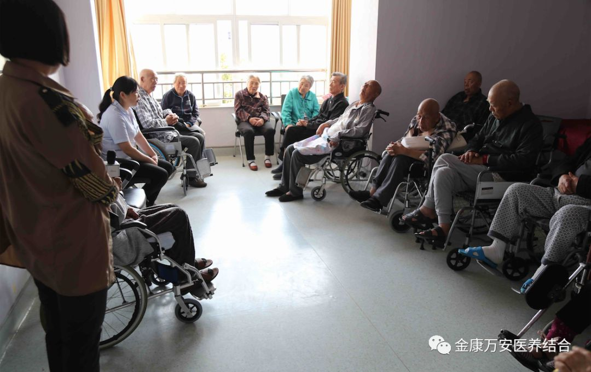

万安康复医院新闻
医务工作者节假日：坚守岗位是一种责任
人气: "" 时间：2018-10-02
国庆、中秋节长假期间，当大部分人都从繁忙中抽离出来，与亲朋好友团聚或者外出旅游之时，对金康护理院、万安老年公寓和万安康复医院医护人员来说，节假日意味着要担负起更大的责任。他们一如既往地忙碌在病房里、坚守在工作岗位上，用责任和爱心守护着一方人民的健康。

为保障医院工作的正常运行及安全生产工作，践行王卫峰院长“孝慈仁善”的企业文化，崇尚尊老爱老的理念，医院领导亲自带班，行政总值班人员严格实行24小时值班制度，保持24小时信息畅通，对值班值守情况即时报告制度，做到有事报事，无事报平安。
今年国庆假期，金康万安继续推行无假日医院，门诊不停诊，住院部和老年公寓也照常上班。为解决节日期间广大患者与老人就医方便，确保医疗安全，在院入住老人们能够度过一个愉快的“国庆”，各科室合理安排了值班人员，确保24小时“随叫随到”。

检验科等医技科室安排专人24小时值班，做到病人随到随查，良好的服务受到了病人及其家属的好评。
 
对于我们来说，哪有过不过节啊，我们都习惯了，中秋团圆，更是想都不用想了。
这是医务人员常说的一句话。

自从踏入这个岗位，就知道我们这个工作的特殊性，过节上班太正常了，都已经好几个节日没有回家了，家人也都很体谅。

这些只是医院里的一些缩影
还有更多你不知道的医务人员
在辛勤地工作着
他们用忠于职守
来表达对祖国的祝福热爱
永远值得我们尊敬